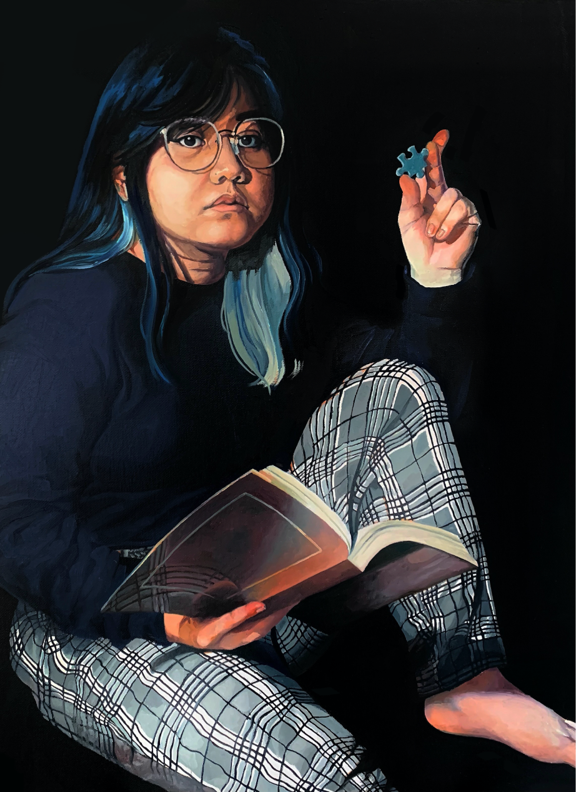

Hello, I’m Jen — an illustrator and painter based in Long Beach, CA. I’m majoring in Illustration and minoring in Asian American Studies at California State University, Long Beach.
Each of my artworks is bonded by the personal stories of others whether it be from their culture, household, or their life in general. In recent times, I’m drawn to the lives of Asian American Pacific Islanders (AAPIs) and the rich anecdotes they hold. Being Vietnamese and learning more about AAPI history and culture, I began to realize that they are rarely shone in the light. Their contributions and struggles are often cast aside when they should actually be uplifted and highlighted. In addition, my art sometimes focuses on the natural landscapes, bustling communities, and architecture of AAPI homelands.
Aside from illustrating and painting, I like to consume my time in unraveling complex puzzles, making quiches, and reading memoirs.
Want to work together? Feel free to drop a line at jennifertnguy@gmail.com.
Each of my artworks is bonded by the personal stories of others whether it be from their culture, household, or their life in general. In recent times, I’m drawn to the lives of Asian American Pacific Islanders (AAPIs) and the rich anecdotes they hold. Being Vietnamese and learning more about AAPI history and culture, I began to realize that they are rarely shone in the light. Their contributions and struggles are often cast aside when they should actually be uplifted and highlighted. In addition, my art sometimes focuses on the natural landscapes, bustling communities, and architecture of AAPI homelands.
Aside from illustrating and painting, I like to consume my time in unraveling complex puzzles, making quiches, and reading memoirs.
Want to work together? Feel free to drop a line at jennifertnguy@gmail.com.